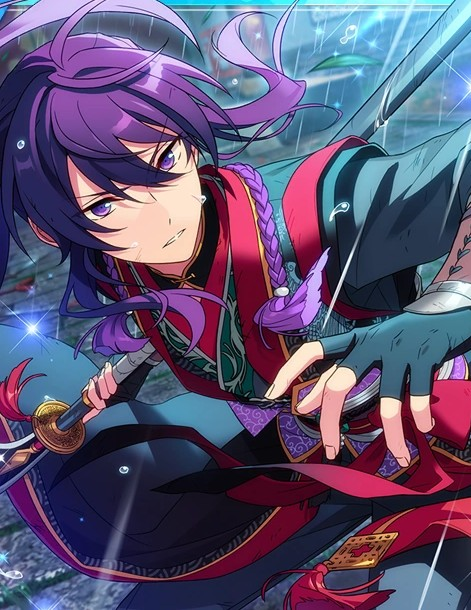
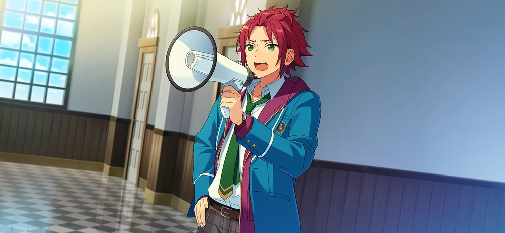
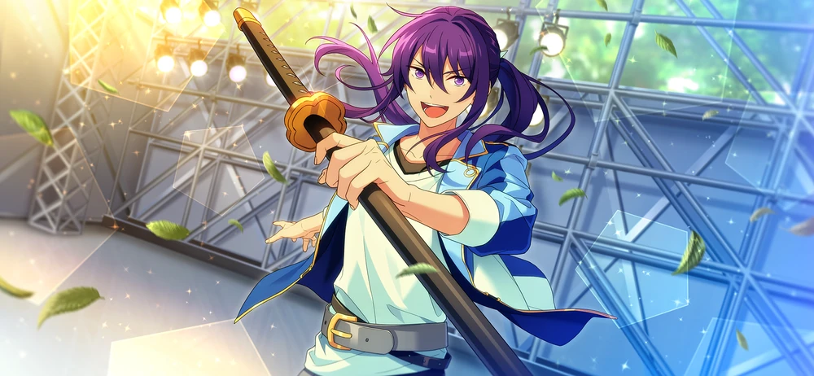

One-Man Army



Unproofread Translations Terms of Service: This story is not JP proofread. Unproofread translations are under much stricter terms of service, including no screenshots publicly spread. Click for more information
While these translations are as accurate as I can personally make them, I am not comfortable with and do not permit use of the following:
Do not take or publicly circulate screenshots of this translation.
Do not use this translation in analysis threads, story threads, fanworks, quotebots, etc.
I would love to get this story properly proofread one day! If you are a translator interested in JP proofreading this story, feel free to email me or DM me at @citrinesea on Twitter.
Chapter 1

Akehoshi-dono, do be careful coming down.
I’m alright, ‘cuz Zaki-san held the chair for me ☆ … Alrighty, there we go!
Sorry to keep you waiting! All done reinforcing the barricade ☆
Good, it looks wonderful. It's much more formidable. It won't be breached so easily now.
You seem very skilled at this. Is building barriers— "barri-kedo"— your specialty?
No. I just kinda went with what felt right~ and tossed it together like this.
Still, pretty good for a first try, dontcha think? I feel so accomplished...☆
— This is no time to relax, though. Let's stay vigilant and keep our guards up, Zaki-san!
Right. We'll show them that we can hold them back successfully.
“One~ two~ Mic test, mic test.”
That voice… It seems that they are planning to try out a new plan.
This "barri-kedo" is the embodiment of my conviction... Even if it's Isara-dono who stands against me, it will never crumble!
Oop, it got too loud. I'm sure the staff room could hear it all the way down there.
The sound carries real well in this hallway, huh~ Maybe I just need to adjust it a little.
— Isara-senpai. Doesn't look like the situation's gotten any more resolved, huh?
What's that you're holding in your hand? It looks like a trumpet.
Hm? Ahh, Amagi. You've never seen a megaphone before? Well, I guess it's not the kind of thing you'd use every day either.
This is a megaphone. It's a machine that makes your voice go farther... Does that make sense? Well, just think of it like a microphone.
Unlike a microphone, though, a megaphone has a built-in speaker. It's really handy in times like this.
(Yeah. Times like this, when there's a barricade, or a castle's under siege or something...)

"Ahem~ Third Year from Class A, Akehoshi Subaru! Third Year from Class B, Kanzaki Souma!"
"We have you completely surrounded! Resistence is pointless, come out with your hands up!"
Liar~! There's no way you've got us surrounded! The only voices we can hear are yours and Hiiro's, Sally~!
How pathetic! You can't deceive us with that drivel like that, Isara-dono!
Surrender? To do so would go against the very oath I've given this sword!
I knew he wouldn't be one to back down easy, but an oath to a sword of all things...
(Sigh) Why did things get this troublesome...?

798! 799!
E— Eight hundred…!
(Two hundred left. A practice swing is still a swing. It's basic fundamental training— that makes it vital.)
(It is not just about the repetitions, but giving every swing my full effort. That's how you get stronger than you were yesterday.)
En garde…! 1
— Mm. What splendid swordsmaship.
Wh— Who goes there!
Oop. I’m sorry for surprising you. I’m Amagi Hiiro.
Amagi? You, are you well-versed in the art of swordsmanship?
I dabble, but not as much as you do, Kanzaki-senpai. If we're talking about martial arts though, my specialty is Amaterasu's Divine Fist.2
Amaterasu's Divine... Fist?
Looks like you don’t really know what that kind of thing is either, huh, Kanzaki-senpai. Well, it’s a martial art that everyone from my hometown knows.
Oh? I’ve never heard of it before, it's piqued my interest. Would it be alright if you showed me the movements you use for it?
Of course. I'd like to spar with you while we're at it. Just watching isn't enough to get the essence of it, I think.
I see. Well, then, let me get set up. Give me one moment.
Oh, you don't need to put away your sword. I'll go against your sword with my fists, Kanzaki-senpai.
It's a mixed-martial art? How interesting. I feel as if I'll have the upper hand using a weapon, though.
To be honest, I wonder. I haven't completely figured out how strong you truly are, Senpai, so we won't know until we fight, right?
I won't take it easy on you. Is that fine?
Heheh, that's all I could ask for. It makes me want to respond with my dearest sword, but—
It would be a serious problem if by some chance you were to get hurt, so I'll use a wooden sword for this.
Let us have a fair fight, to determine the victor then...!
Take that!
...
Ha! There! ... En garde! 1
("En garde"? What a strange shout of encouragment.)
(Kanzaki-senpai is just like Buchou, talking while he's fighting. I wonder if this is how they do things in the city?)
Take that!
(... He handles his sword wonderfully. I wish the swordsmasters back home could see this.)
(Wait, no. I got so focused on observing him, I've gone on the defensive. At the next opportunity, I'll—)
Take thaaat!
— A weak point!
How's that? My eyes are getting adjusted to the way you move, Amagi.
This much is just a warm-up to me.
My body'll get going any second now! — Hah!
O~i, Kanzaki! Are you there~?
— What the. Oi, oi, what’s going on here? Is this a fight?
Ohh, Isara-dono. We were just sparring to show each other our respective crafts.
Yeah. It’s a lot of fun, you should join us too Isara-senpai!
Nono. That sorta thing isn’t my strong suit, so…
Haha. You two are way too calm sparring while talking, huh.
Still, it's such astonishing intensity. I see why there's been complaints, with stuff like this...
Hm? Complaints?
Chapter 2
— Let's pause, Amagi. I call a truce.
What "complaints", Isara-dono? Do they have to do with me, by any chance?
Ahh, yeah. The truth is...
It was a complaint from one of the first years about the sword you wear. They were worried about whether they were going to be slashed, passing by you.
Slashed? Kanzaki-senpai?
There's nothing for them to be worried about. I don't attack people indiscriminately.
I know that, you're a really kind person, Kanzaki.
But that's just because I know how you are. Those guys don't, so it makes it scary to them.
It's not like I don't understand how they feel, either. In this era, you don't see people walking around carrying swords every day.
Is that so? In my hometown, it's pretty typical.
Really...? M~nn, well I guess I'll correct that— in the city, you don't see people walking around carrying swords every day.
Anyways. If complaints come in, it's my responsibility to deal with them.
When you come to school, how about you just leave your sword in the Student Councilroom for safekeeping?
... Fine, I leave this in your care.
What the. This short sword's...
It is a wakizashi. I cannot hand over my cherished sword to someone else, so I'd like to make a deal with you; let this one take its place.
I mean, you're saying that, but... Sorry, that's just not going to happen. Please hand over that sword.
No. Even if it's Isara-dono who stands against me, that is not going to happen.
This cherished sword has been passed down through my family from generation to generation. I was told to always wear it and never let it leave my side.
I get that. It only has to be during school hours, so—
You do not get it, Isara-dono! This sword is my lifeforce!
I have government authorization to wear this sword, and when Hasumi-dono was in the student council, he allowed it!
So, why!? Why are you trying to take it from me!?
Well, I...— As the Student Council President, it's my duty for the sake of the student body to—

I am part of the student body too! And I will never hand over this sword!
Wait!? Hold it, Kanzaki!

(Panting) ...
(... The sound of Isara-dono's footsteps have stopped. It seems I've finally shaken him off my trail.)
(But what should I do from here? The academy is small, so there aren't many places to hide.)
(And even if I make it to the end of the day, what about tomorrow? And the day after that? Will I have to be on the run for the rest of my life...?)
Oh, I spy with my little eye... Zaki-san~! Ya-ho, ya-ho~☆
Akehoshi-dono...
What're you doing here~ .. Hm? Are you okay? You don't look so good.
Oh, are you sick or something? Shouldn't we get you to the infirmary to rest?
I see. If I were in an infirmary bed, it would be quite hard to notice me.
But we are pretty far from the infirmary, Isara-dono might catch us on the way.
Catch you...? So... maybe you're playing tag with Sally~ then?
Ah, man... if you were gonna play, you should've invited me, y'know~ I wanna play tag too! Count me in, count me in~☆
Mn. I am not running away because I am playing a game. I'm running for my life.
Running for your life? That sounds like a pretty big deal, doesn't it~
I'm not exaggerating, it's the absolute truth. There have been complaints from some first year students, so Isara-dono wants to confiscate this sword.
This sword is important, it has been passed down in my family for generations. I absolutely cannot hand it over.
Eh~ Taking Zaki-san's sword... that's so cruel! A Zaki-san without his sword is like a Gami-san without his guitar!
Leave it to me! I'm gonna let Sally really have it~!
Hold on, Akehoshi-dono. I'm thankful for your feelings, but you won't get the result you're hoping for. I attempted to persuade him myself, but he wasn't open whatsoever.
That is why I have to be on the run, but... I still haven't quite figured out a place to hide.
Got~cha... You're on the run, huh...?
... Okay, I thought it through and came up with something good ♪ Zaki-san, over here!
What's over there?
Don't worry about it! Quickly, quickly, follow me ☆

We're here~☆ I didn't know if Sally~ would find us on our way, my heart was going crazy! Just getting here made me tired.
(Hmm, it couldn't be, hiding in a classroom... surely, we'll get caught like this right away, but...)
(There are plenty of classrooms. Thinking about the time it would take to search them one by one, this might be a way to buy us some time...?)
O~i, Zaki-san. Come help me move the desks.
The desks? What on earth are we going to do with the desks?
Heheh. It's a siege, baby. S-I-E-G-E ♪
I saw this in a school drama once, all the students build a barricade up at the entrance to the classroom in order to stand up against the evil headmaster.
It tried to get breached over and over, but the students joined forces and drove them all away, and eventually the headmaster surrendered.
The feeling of all of them working as hard as they could was totally "springtime of youth" vibes. It was super-duper sparkly! ☆
Hmm... They say that you need three times as many troops to siege a castle than to defend it.
It might be a better plan than brazenly running around from place to place, where they could be lying in wait.
Bingo! Let's make an unstoppable barricade, and protect that sword from Sally~ One, two— go team! ☆
Chapter 3

M~nn. The new president's taking his time, huh? I wonder if he stopped off somewhere.
Maybe he's loitering around and skipping out on work?
That couldn't be. The new president would never do something like that.
Mhmhm. Isara-dono is a serious person. after all.
I'm not saying I don't trust him. He's working hard as the student council president, I could learn a thing or two from him.
But he's taking a long time coming back. Does it really take that long to persuade one person to do something...?
... Ah! Maybe he was ambushed by a Tsujigiri...! 3
If you put it like that, it'd be more of a counterattack. Kanzaki-dono is a samurai, he wouldn't be perpetrate an act of violence.
... Oh. It seems he's finally returned. Welcome back, New Student Council President-sama.
I'm back~...
Oh? From the looks of things, it seems that persuading him was a failure, hm?
Yeah, it was a complete bust. He was like, "You will never take my sword away," and ran off. I went after him best I could, but I ended up losing sight of him.
Hm~nn... It's you, so you probably went easy on him, hm? And he took advantage of that and made a run for it, right?
Being friendly with everyone is one of your good points, but as a person in power, it's bad if you're not strict when you need to be, you know.
If things keep up like this, no one's gonna take you seriously, you know~?
Ahaha, it hurts to hear that. Thanks for the advice, I'll take it to heart.
So then, what shall we do from here? I imagine you will hunt down Kanzaki-sama, hm?
Yeah, that's what I was thinking. Knowing Kanzaki and how he acts, he should still be somewhere inside the school.
If it's a man hunt, leave it to me! I'll make full use of my ninjutsu and find him for you!
Is that alright, Sengoku?
Yep! You are the strategist, Isara-dono, so refine your plans here!
With that, please excuse me! Shutatata...☆

Hey, wait. Did you just go out the window!?
Fufu. He is thrilled when he gets to do covert operations, hm?
Operations? I don't think any of this would be happening if you just did what I said at the very start.
It's not too late, let's have Hasumi-senpai and Kiryu-senpai come here. Kanzaki-senpai would listen if it comes from AKATSUKI, right?
Maybe, but... Let's rely on those two as a last resort, okay? I want us to be able to resolve this problem ourselves.
No, not just that. The academy of now is who this skirmish belongs to. There's no point in having us here if we rely on the graduates for it.
...
Sorry we have to figure it out ourselves. You know Tenshouin-senpai really well, so I probably look pretty inept compared to him.
... Hmph, obviously. Eichi-sama is perfect, so it's totally absurd to compare yourself to him.
But, Eichi-sama is Eichi-sama, and the new president is the new president, right? From birth to upbringing, you're leagues apart from each other
So grasping for help, taking time to get better... If your way of doing things can get things to work out, that's works too. Am I wrong?
... No. That's right, even if heaven and earth were moved, I'll never be like Tenshouin-senpai.
And that's exactly why I'll do my best to make it work my way, even when there's times I get frustrated trying to find the solution.
Looking forward to working with you from here on out, Vice President ♪
Right... ♪
... Um. Can I sneak back into the conversation yet?
U-whoa!? You scared me~ You're back, Sengoku?
Uuu, I'm super duper sorry! The mood was just so nice, I didn't wanna jump in...!
Forgive me. I neglected to inform you of Sengoku-sama's arrival as well.
No, no, please, come in, it's fine...
So, how'd it go? Did you find Kanzaki?
Yep, mission completed! I spotted him heading into Class 3B's clarroom.
Way to go! Just you wait, Kanzaki, we'll settle this with a proper discussion!

(No way it ended up being a classroom... It really is the things under your nose that stay out of your radar, huh.)
O~i, Kanzaki. I know you're in ther—
Wah!? Where'd this mountain of desks come from...?
Fwahaha~! Surpised, Sally~? This is the Kanzaki-style4 Barricade...☆
Kanzaki-style? There is no such technique from my family.
Really? Well, then it's Akehoshi-style
That's Subaru's voice...? Oi, why on earth are you here?
Heheh. Zaki-san told me everything. And so, I'm Zaki-san's ally ☆
Under no circumstances will we hand over the sword! We oppose the sword hunt~!
This isn't a sword hunt, it's just for safekeeping. Ahh, forget it. Of all people to make an enemy out of today, it had to be that troublesome guy...
Hey, hey, Sally~ You know, right? That for Zaki-san, his sword is irreplaceably precious to him.
So, why are you trying to take it? Please, let him wear his sword!
... Sorry, Subaru. As the student council president, I have to defend the student body.
There were complaints from students, so I have to deal with it. We may be friends, but I can't overlook this.
If you're going to hold up a siege like that, you're just going to cause extra trouble for other students. Surrender quietly.
I refuse. This sword and I are one and the same, I cannot bear to think of it leaving my person.
This siege is a declaration of my feelings! This is a just protest movement!
Yeah, that's right! We won't give in to The Man!
Ooi, keep it down. You'll cause a disturbance.
They've got me there, what should I do...?
Chapter 4

— What is all the commotion?
Ahh, Otogari...
Hm... What is all this? There is a pile of desks at the entrance of the classroom.
It's a barricade. Kanzaki and Subaru are holding up a seige.
Come to think of it, you and Kanzaki are pretty close, huh...? If it's alright with you, could you help persuade him with me?
Persuade him?
There was a complaint made by a first-year who was scared of his sword. I'd like Kanzaki to stop carrying it on him, at least while he's on school grounds.
...
You'd hate it if the underclassman were scared of Kanzaki, wouldn't you, Otogari?
... You're right about that.
Understood. I will try and persuade him.
... Hmph!
(Uwaa!? He tore open the barricade with one hand.)
Hm!? Who goes there!?
It is me. I want to talk to you and Akehoshi. Can I come in?
Ooh~ You're a real Superman, Occhan~ Sure, come in, come in ☆
Mm. Then, please excuse me.
I'm coming in too—
Nope! Not you, Sa~lly! Shoo shoo.
Ahh, hey. Stop trying to slip the sword through the gaps of the barricade so threateningly!
(Uuu, it looks like I've been banned from coming in. I'll leave this to you, Otogari. It's all up to you now...!)

Nnah, Ikkun. Hellooo...
I heard shoutin' over here, what's goin' on?
Whoa, a parade of recognizable faces, huh... Actually, Kanzaki and Subaru have holed themselves up in that room.
Holed up... Is somethin' horrible goin' on in there?
Awawawa. Wh-What should I do...!? Are we gonna have to call an ambulance!?
Why would we need to call an ambulance? If anything, we should be calling the police, but we don't need them either.
It's just a difference of opinion, don't worry. I'm sorry for causing a panic.
Phew~ A difference of opinion, huh...
If that's what's goin' on, I got nothin' to add to it. I just don't want my friends to fight with each other...
I hope ya reach an agreement soon...
Yeah. I hope so too. I'll do the best I can to make that happen.
... Huh? The barricade's shifting—
Huh? It's just you, Otogari? Where's Kanzaki and Subaru?
They're still in there. I've decided to leave them be and do what they want.
Huh? ... What?
You had your side and Kanzaki had his side to fight for. His feelings made sense to me when he explained it to me himself.
I couldn't decide whose opinion was right, so I didn't lure him out.
This should be something the two of you work out amongst yourselves. Sit with each other and talk to each other.
Otogari... And there he went.
(He said that we should talk to each other, but they won't even let me in the classroom.)
(At this rate, should I just force myself in there and accept the risk I'll get stabbed? But...)

— How long will it be until the barricade is unsealED?
Sakasaki, Harukawa...
HaHa~♪ Hello, Sally-san ☆ You seem a little tired?
When you're tired, the best thing to have is something sweet~♪ Take this toffee!
Ahaha, thanks. Did you guys hear about the commotion from others?
Maybe you could say that... or maybe noT. I keep my fortune-telling cards in that classroom, so when I came to retrieve them, I saw they barricaded the classroom.
I was here looking at it wondering what to do, when you came along, so Sora and I decided to step back and observe the situatiON...♪
So you were here the whole time, huh. People watching's a shady hobby, you know~
But there's been no progrESS, so I'm getting a little sick of iT. I just want to grab my tarot cards and leaVE.
I thought luck had turned in my favor when Ado-kun moved the barricade for me because I saw there was a gap just big enough for one person to slip through.
No way...? Hey, Sakasaki, while you're at it, can you go in there and talk to those guys for me?
Tell them to take down the barricade and that I want them to come out and talk with me. We can't come to an agreement like this, where we can't talk to each other.
Everyone's impressions of him are definitely going to get even worse.

— Soma-kun, Baru-kun. Are you alive in heRE?
Mnmn. So the next assassin is Sakasaki-dono and his entourage, then.
Assassin? My, how dangerOUS. I just came by with Sora to pick up my fortune-telling iteMS.
(He told me to come talk to them, but it's already too much of a paIN.)
(Just getting the barricade down is all I have to do, right? Let me just hypnotize them real quick—)
... Hm? Sora, why are you tugging my sleeVE?
Shisho~... Sora doesn't want you to do anything.
Kanzaki-senpai's color is very beautiful. Sora doesn't want him to have a sad color~
Sora...

...
(No one's come out. I wonder what's going on in there...?)
(What could they possibly be talking about in there. It's been quiet for a while, but I can't really tell what's going on. Was this time a bust too...?)
(No, it's too soon to give up. If he's in the middle of persuading him, I'd just spoil it if I called out to them.)
(I'll trust Sakasaki with this. I just need to wait a little longer...)

Maa~kun♪
Uhii!? That voice is Ritsu! Why are you rubbing your cheek against the nape of my neck? Stop that, it tickles!
Ehehe, I just thought I'd comfort you, Ma~kun. It seems you're in quite the pickle.
There, there, it's alright. Even if the entire world turned against you, I'd be your ally to the very end...♪
That's not what's happening at all. And what kinda serious crime would I have to commit to get the whole world to turn against me like that?
Well, even without further details, it certainly appears that you have a big problem on your hands.
You're wasting time just staring at the door. If you want to come to an agreement, how about you settle things with a duel?
Oh, Tsukasa-chan. A duel would be quite dangerous
But I agree with his advice that you should act soon. Just observing the situation won't do anything to change it, that's for sure.
If there's something between you two, you won't be able to come to an agreement. So you have to act.
(Even if you say I have to act... Just look at this barracade. I take this on on my own.)
(It's definintely easier said than done...)
Chapter 5

Dash, dash, da~sh~!
Hm? That voice, with those springy footsteps...
We've arrived~! Uwaa, so this is the scene of the crime! I can feel the fun from here~♪
Yep, that's Tenma alright. You seem excited, are you here to gawk at this whole thing like Suou and the others?
Hey! Mitsuru! Just because there's less people at the end of the school day doesn't mean you can run down the halls!
Sorry if this guy's been a nuisance, Isara-senpai.
What are you apologizing for? I haven't done anything yet, y'know! Hmph~!
Tomoya-ku~n, Mitsuru-k~un!
(Huffing) I finally caught up to you guys.
Ah. Good afternoon, Isara-senpai~♪
Yo. You called it the "scene of the crime", but has the rumor been spreading to the other classes?
Nacchan-senpai and Sora-chan told us about the ba~rri~cading! We came to see if it was forreal!
This is the first time I've ever seen a barricade in real life! It's like something outta a school drama, kya, kya ☆
Haha, you laugh so innocently. ... It's pathetic of me to rely on you second-years, but I can't get in there myself.
Maybe they'll hear me out if it's coming from their juniors. Could you guys just go in there and talk to them for me?

— And that's why we're here! Heheh☆
Ahaha. That's so you-core, just up and telling us everything Sally said, Dazedaze-kid~
I'm pretty bad at lying, yanno. So I thought I'd just come out with the whole truth!
I’m not entirely sure about this guy’s tendency to lay absolutely everything out in the open, though. Still— thanks for being so honest with us about how this whole standoff ended up happening.
There is no need for your gratitude. I merely responded to your honesty with my own.
Haha, that's so like you to say, Kanzaki-senpai.
I feel bad for Isara-senpai, but... You've got a good reason, so I'm going to side with you on this one.
Me too. I'm frustrated I can't really do anything to help, though.
I'm cheering you on from the very bottom of my heart, please do your best...♪
Just saying that is enough! Thanks, Shinonon! Hu~ug~☆
Hweh. E—Everyone's watching. I'm happy, but it's embarassing too~
You made a barricade out of desks, so the classroom's real roomy, yanno! Looks like there's all kinds of space to play around in!
Putting up a si~e~ge looks fun! I wanna hang out here with everyone else too!

(I can hear the sound of laughing from in there~ Looks like that rabbit ambush was a failure too.)
(... How about I try looking up successful ways to end a siege online.)
(...)
(... Of course there's nothing. Alright, alright. I got it.)
Kanzaki~ Subaru~ You made your point, come out already~ (Sigh)

He~yy, Isara-senpai!
Hm? So this time it's RYUSEITAI who's come by.
Ossu! Well, it's just me and Midori-kun, though!
Mnn, we heard what was happening from Shinobu-kun... About them holding up a siege...
Who thought there'd actually be a barricade, huh? It's the kinda thing you'd only see in movies or dramas...
... I'm gonna take a picture real quick.
Whoaa, is this some kinda tourist spot now?
Shinobu-kun asked us to come help you, but...
Sorry. I'm on Kanzaki-senpai's side. I would never, ever let someone take something so important away from me.
I see... And you Takamine?
Huh? Me? ... I dunno, I haven't really thought about it.
H~mm... It... doesn't really matter to me either way. It's not my problem, so what's the point in having an opinion about it...? Well, but...
Why should Kanzaki-senpai have to get terrorized just because one person complained? He hasn't been a problem up 'til now...
That's...
... Well, it doesn't matter. You can't ignore complaints when they're brought to you.
That's just the struggle of being a leader, Midori-kun.
Seriously...? That sounds real sucky. Just thinking about it depresses me...
I want nothing to do with that kind of complicated life... You're impressive for being the student council president, Isara-senpai...
Haha, thanks.
(Impressive... Ugh, it really isn't it. It's just like Takamine said, I'm sacrificing Kanzaki for the sake of one person. But...)
(It's like Nagumo said too, I can't just ignore a complaint. I'm doing this because I thought it was right for Kanzaki to submit to what I wanted him to do.)
(What's the right answer? What should I do...?)
Chapter 6

(Even though I've tried to get all kinds of guys to go in and persuade them, each and every one was a bust. Even when I try to reason with them with the megaphone... Nothing.)
This wasn't how things were supposed to go... (Sigh) How did things spiral out of control like this?
(... Hasn't it been out of control from the very beginning? When I actually think about, Kanzaki was never going to be willing to do it. I shouldn't have rushed it and thought it through waaay more carefully.)
(And even worse, he's got that troublemaker on his side. All Subaru getting involved did was pour gasoline on the fire... What the hell am I supposed to do about all this...?)
... I was told that whoever sat as the student council president was essentially the same as monarch of the school.
What I mean to say is that you are the monarch here at Yumenosaki Academy, Isara-senpai.
Back in my hometown, disputes like this were settled by the decision of the monarch.
The rules here in the city are complicated, and I still don't know them all yet, but if you really want to take that sword—
Why can't you just use your authority?
...Well, that is one way to do it.
But that’s not the way I do things. I don't want to spill blood or strong-arm people into doing what I want.
It might sound idealistic of me, but I want everyone to be happy. I want this school to be a paradise brimming with everyone's hopes and smiles.
I don't want to give up yet. If I could just talk to them, there must be a way we could find a more peaceful solution or something.
...
I know it's naive. I get that. I've got a literal barricade shutting me out, you must think I'm delusional.
... I see. "Just talk to them," huh? I understand.
You can leave it to me from here.
Huh? Leave it to you...?

Uuu, I've gotten real hungry~ We should've stopped by the school store before we barricaded ourselves in here.
I'd go buy something, but it looks like Sally's still outside the classroom. Aw, man, he's so stubborn, huh?
Are you doing alright, Zaki-san? You're not hungry?
This too is training. I could go about a day without eating.
(... Is what I want to say. I don't believe in going to battle hungry, so I haven't actually trained to go without food, so even I don't believe what I'm saying.)
(But I must put up with it. I absolutely cannot let them break through my last stand.)
(Whatever I have to do, I absolutely cannot let them take this sword...)
— Uwaa!? Zaki-san, get away from there!
What the—...! The barricade has fallen...
I was trying to moderate my strength so I wouldn't break them... Are you guys okay?
Whoa... What kind of Superman strength is that...?
Kanzaki, Subaru. What's up?

Isara-dono—
Haha, don't be so on guard~ I didn't come to take your sword or anything.
I bought bentos for the four of us. Why don't we call a ceasefire and eat them together. It's my treat ♪
...
I get why you're suspicious. But aren't you hungry? Holding up a siege like this for so long?
I'm starving, so would you do me a favor and let me eat in here? It'd be rude eating out in the halls, wouldn't it~
You have my assurance it hasn't been poisoned. We bought it from the school store, so please rest easy and enjoy it.
Uwaa, it looks delicious~ Zaki-san, let's eat up~
... Mm.
Thank you. I'm happy you accepted it.
The barricade you guys made was real impressive, you know. I never would've been able to get in by myself.
Where'd you learn how to do this?
All self-taught, baby. I relied on my memory and tried and attempted to capture the vision...☆
This was an "attempt"? You're a real scary guy, you.
Mhm~ I'll do anything for my friends, after all!
For your friends, huh...
... Kanzaki—
Don't take my blade.
I know. ... That blade is precious to you in one way or the other, I've got that by now. I'm sorry.
God, I'm such an idiot. In trying to look after the needs and wants of the whole student body, I neglected your needs.
I suppressed your wants and desires for the needs of everybody else.
I decided arbitrarily that there was nothing else I could do and it couldn't be helped, because I thought it was what was right. The way I chose was to force you to do what I wanted.
...
I wonder if there's a path we can take where both sides are happy: the first years aren't terrified, and you can get to keep your sword...
I've been wracking my brain like crazy trying to come up with a good solution, but I couldn't come up with anything. I'm pretty pathetic, huh...
...
... I have just one request, Isara-dono.
Will you allow me a venue to perform a sword dance for all of those who wish to see my sword taken away.
You want to perform a sword dance?
Yes. Thanks to the assassins you sent in, or rather, the friends you sent in, it made me realize something.
The permission I've been given to don my sword is not just thanks to the government authorization I possess. It comes from people recognizing my sword is something I need.
And at the same time, I have learned that if you show that you are sincere, people will come around to listen. There is the method of persuading people through words like you do, but—
I am a samurai. I want this blade to speak for itself.
Please, just once. If everyone who watches isn't convinced, and I fail to receive that recognition, I will willingly give up this blade.
Please... This is the path I propose.
... Please lift your head, Kanzaki.
I understand, you have my permission as the student council president. You have my complete and full support of your sword dance performance too.
Let's show them your way of life together.
Chapter 7

Step right up, folks— come, come, come and take a peek!
This set of One-Man Army merch is one day only! Hey, Aniki, doesn't this make you think of last year? ♪
That's right, Yuuta-kun ♪ And just like then, let's sell all this stuff and make our cheddar~
Ah, easy pickings— Ahem. Found you, Ogami-senpai ☆
Hey, watch it, Hinata. I heard you call me easy pickings!
You misheard me, this is slander! I said you were "easy-going", right, Yuuta-kun?
Mhmhm. We would never ever call someone easy pickings ♪
Forreal~?
Forreal, forreal. Anyways, forget that, care to buy something~? Might I recommend the, "Drinking this will give me the power of a thousand men!? The alluring One-Man Army Juice!"
Please try this, "Might this fill me up for a thousand days? The One-Man Army manjuu" ♪
Both of you are fishy as hell... I'm not gonna buy anything.
I see, I see. You said you're not going to just buy them for yourself, but for everyone in UNDEAD too?
As expected of you, Senpai, you're so generous! So we'll put you down for four sets, thank you sooo much for buying them~♪
I never said that! I'm not gonna buy anything!

Alrighty, the stage is almost ready...
Makoto, how's it going over there? Need help with anything?
Nah, it's all good over here. I'm used to sound-stage stuff from all the work I did for the Broadcasting Committee, so...
Whoa, how reliable~ I'm glad I can leave it to you then ♪
Hey, I'm just glad you reached out to me. I love getting my hands on machines like this...
It's rare for lives not to be a matter of life or death in Yumenosaki. Seems like everyone is relaxed and having fun ♪
I agree. It's all up to him now...

— Got it. I'm in charge of keeping time, so I'll make sure everything runs as planned on the dot.
...
The show is about to begin any moment now. Are you ready, Kanzaki?
... Is everyone here hesitant about me carrying my blade?
There's no way. We didn't ask everyone who came, but it should only be a few—
Most of the audience is here to see your live.
...
Nervous?
... Whether I am or not, this is the path I have chosen.
— Now, let us begin!

"Now, now, may my voice be heard all the way to the very back of the audience. I am Kanzaki Souma! For coming to my solo live "One Man Army," you have my deep, eternal gratitude.
"... Hm. By the looks of the crowd, it seems quite a few of your eyes are resting on my blade."
"And my beloved blade is the reason this live is being held."
"I always have this blade at my side. If I ever frightened you, I deeply, sincerely apologize."

"However. I do not wear my blade with the intention of harming anybody. I would never. This blade is my soul."
"To make it known just how much this sword means to me, I shall dance! Please watch me and the essence of my art carefully...!
"♪～♪～♪"
Chapter 8

3000 strikes in the morning, 7000 strikes in the evening— that is the Jigen-ryu style1, which renders a second blow entirely meaningless.
... En garde!
There you are, Kanzaki. Active as always, huh?
Isara-dono...
Don't make that face. If I was going to take your sword, I'd have been a lot more assertive about it.
Speaking of, I'm sorry I haven't contacted you sooner. Crunching the numbers for the live profits took a while.
Profits?
Hinata-kun and Yuuta-kun used the One-Man Army live as an excuse to do some entrepreneurship.
It looks like they made a killing, so I took out a fee for using the venue and put it in the AKATSUKI joint account. It's your money, so you can spend it however you want.
I did not hold that "raibu" to make money.
Taking care of your equipment isn't free, is it? Just take the money, it's fine.
... I understand. Thank you for your consideration.
Yeah. One thing, about the complaints the from the students—
They've withdrawn them. Yesterday's live has seemed to change their minds.
To you, your sword isn't something that hurts people, but a way to charm people. It's what makes "Kanzaki Souma" Kanzaki Souma.
They said that as fellow idols, they didn't want to take that away from you and apologized for it.
On top of that, we've put an addendum in the student council that permits you to wear your sword around school. We will respect the wishes of the students and won't confiscate your sword.
T— Truly?
Yeah. The condition in return is that you not draw it recklessly. Can you abide by that?
Of course. I am not a scoundrel who picks fights with others indiscriminately.
Ooh, you promised~♪ Now that you have, you gotta keep to it, 'kay?
Alrighty, then that makes this case closed, huh.
... I didn't think things through well enough, and I made trouble for you. I'm sorry.
If I'd just thought about how to get people to recognize you, things would have been handled a lot easier...
Please don't be so discouraged. All things considered, it wasn't a bad memory.
If anything, looking back on it, it was actually delightful. It isn't everyday I get to have the hands-on experience of putting up a siege.
Besides, people learn from their mistakes. Making those mistakes is essential for growth.
When I had first joined AKATUSKI, all I could do is make mistakes, and I inconvenienced Hasumi-dono and Kiryu-dono. Since I've become a senior, I assumed that automatically meant I had matured.
But I still have far to go too. I rested on the laurels of my government permit, and bolted the second someone tried to take my sword.
I'm still an inexperienced child.
Haha. We're high schoolers, that's what children are. We're kids who worry and struggle and dig in the mud for the right answers.
But- that filth is what's actually good. It's like you said, making mistakes is how we learn.
At the very least, as the president of the student council, I want Yumenosaki Academy to be the type of environment where you have the space to do that.
Isara-dono...
It's easier said that done, though, huh~ Well, I'll do my best to get as close as I reasonably can to that. I'd just inconvenience everyone if I work too hard at it and collapse.
Half of the school year is already gone. Let's enjoy the rest of our school life together.
Right. I shall continue devoting myself to honing my body and spirit every day as well.
And I will show everyone that I will become a splendid samurai, unanimously thought worthy of carrying his sword.
Translation Notes
- ↑ ちぇすと (chesuto or chesto), an exclamation Souma gives when he lunges with his sword. I've localized this as "en garde" to give it a similar feeling.
- ↑ 天照大神拳 (Amaterasu Omikami Ken) is a fictional martial art. Amaterasu Omikami is one of the names for the goddess of the sun, Amaterasu.
- ↑ Tsujigiri (辻斬り or 辻斬, lit. "crossroads killing") was a samurai-practice where samurai test a new sword's effectiveness by attacking (usually defenseless) passersby.
- ↑ Individual schools (流, -ryu) follow a particular set of principles, philosophies techniques, all which vary depending on the school. Subaru matches the name format of (school)-ryu (流), calling it Kanzaki-ryu.